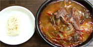
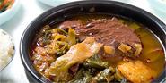
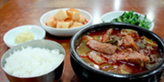
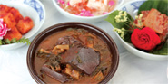

전국에서 얼큰하면서도 다양한 버전의 쇠고기국을 가진 도시는 대구가 유일하다. 대구따로국밥(대구육개장) 의 특징 중 하나는 붉고 걸쭉한 고추기름. 국이 끓을때 고춧가루를 넣지 않고 녹인 쇠기름으로 고추기름을 만들어 양념으로 넣는다. 대구는 삼복에는 엄청나게 땀을 흘리고 겨울에는 사람을 동태로 만들 정도의 혹한이다. 고춧가루에 들어있는 캡사이신 성분이 여름에는 땀을 배출해 주고, 겨울에는 찬 몸을 덥혀주는 구실을 한다. 1929년 12월 종합 잡지 '별건곡'에도 '대구가 육개장의 고장'이었음을 알려 주고 있으며 최남선의 “조선상식 문답”에도 육개장을 대구의 명물로 소개하고 있다 1946년부터 한일극장 공터 나무시장에서 국에 밥을 말아 팔던 국일식당은 사골과 사태를 밤새도록 고아 우려낸 육수에 대파와 무를 넣고 고추가루와 다진 마늘을 듬뿍 넣어 얼큰하고 매운 듯하면서 개운한 뒷맛이 일품이었다. 6.25전쟁이 나자 전국 각처에서 피란민이 대구로 모이면서 국밥 형태의 상차림을 싫어하는 사람들이 ‘밥따로 국따로’를 주문하면서 생겨난 것이 따로국밥이다. 따로국밥은 육개장의 상차림의 형태를 말하는 것으로써 '얼큰 화끈'한 대구만의 맛을 대변하는 대구 향토음식의 좌장격으로 전국에서 몰려온 피난민들 사이에서 폭발적 인기를 끌었다.
|  | 대구전통따로식당 | 문의처 053-424-7745 |
| 대구광역시 중구 국채보상로 563-1 | ||
|  | 벙글벙글식당 | 문의처 053-424-7745 |
| 대구광역시 중구 동성로3길 102 | ||
|  | 국일따로국밥 | 문의처 053-253-7623 |
| 대구광역시 중구 국채보상로 571 | ||
|  | 대덕식당 | 문의처 053-424-7745 |
| 대구광역시 남구 앞산순환로89길 5 |